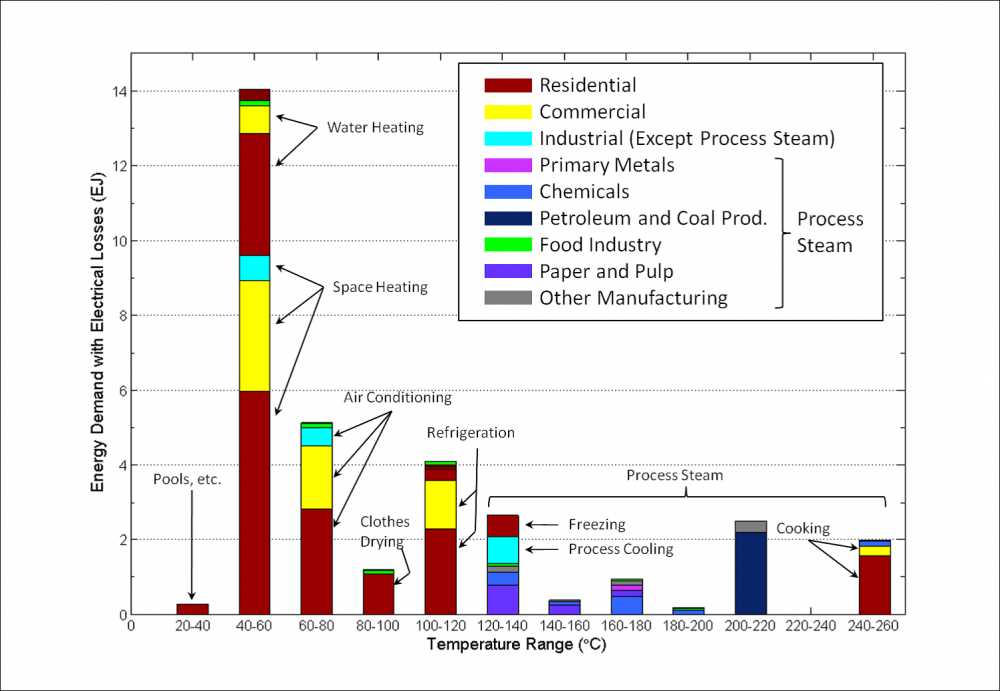
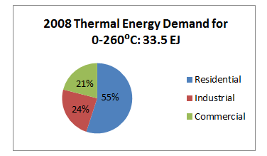
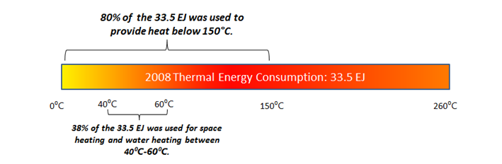

Introduction
The GTO is seeking to enable the widespread utilization of lower temperature geothermal resources that are shallower than most conventional hydrothermal resources, but deeper than geothermal heat pumps (GHPs) and other traditional direct-use systems. These reservoirs are being referred to as Deep Direct Use (DDU) resources, and it is believed that applications of this nature could bring valuable returns on geothermal investment in the near-term.
Typical geothermal direct-use operations utilize a natural resource -- a flow of geothermal fluid at elevated temperatures which is capable of providing heat and cooling (via absorption chillers1) to buildings, commercial and residential applications, industrial processes, greenhouses and aquaculture ponds. DDU systems would utilize a similar temperature range of fluids, but on a much larger scale.

District heating and other direct-use applications which fall within the lower temperature spectrum of geothermal applications encompass the bulk of the readily accessible geothermal resource base. Increasing demand for net-zero energy campuses, military installations, hospital complexes, offices, hotels, and other large energy end-uses offers great opportunities to significantly expand the impact and reach of geothermal energy applications across the United States.
Background
Direct-use is the oldest, most versatile and most prevalent form of geothermal energy. Techno-economic analysis conducted over decades provides support for geothermal direct use and district heating from geothermal resources, however technical, cost and institutional barriers to implementation remain. A 1980 study on geothermal resources in the Eastern U.S. (John Hopkins Applied Physics Laboratory) references a paper by J.E. Tillman published in the journal Science which notes that:
"a geothermal resource that consists of hot water at moderate temperatures (below 125°C) underlies many areas in the central and eastern United States. Programs funded by the Department of Energy have revealed that this resource is definable and economically competitive with conventional fuels for use in direct heat applications. The resource, therefore, has the potential for reducing our dependence on the imported oil used for space heating. However, front-end costs and risks to explore, drill, test, and evaluate the magnitude of the resource have inhibited development. The question is, therefore, how much federal stimulation will be needed to convince private capital to exploit this widespread low-quality energy source."
The direct use of geothermal energy refers to the thermal utilization of geothermal heat in residential, commercial, and industrial facilities that have an inherent need for a reliable supply of heat. Most direct use applications require geothermal fluids that are low-to-moderate temperature which are typically much more abundant and located at shallower depths than the high temperature resources needed for traditional power generation applications.
Large-scale, fully integrated DDU geothermal systems have not been realized in the United States, although efforts of this type are increasingly popular in Europe and elsewhere. For this program, DDU applications would be systemically engineered to maximize the use of the heat entrained in geothermal brines to provide the energy needed for residential and commercial thermal applications. These activities would optimize the usage of geothermal fluid based on the depth to resource, temperature (both ambient and resource), present cost of thermal energy, and other pertinent factors. Projects would be focused on more densely populated areas of the country which have not been able to utilize significant amounts of geothermal resources to date.
Demand
Using data from the U.S. Energy Information Administration, at least two recent studies (one by the Atkinson Center for a Sustainable Future and the Cornell Energy Institute and one by ORNL) note that the total thermal energy from 0 to 260°C used in 2008 was 33.5 EJ (31.7 quads), about one third of the entire U.S. demand. The charts below further breakdown the 2008 thermal energy usage for 0 to 260°C. Nearly 80% of 33.5 EJ is used to provide heat below 150°C. Space heating and water heating have end-use temperatures of 40°C to 60°C and are responsible for 38% of the thermal energy consumption below 260°C in the residential and commercial sectors. While the geothermal direct-use market in the United States is relatively small, utilizing geothermal direct-use via DDU for these thermal energy demands offers a sustainable, zero emissions alternative to conventional heat sources mostly supplied by high-grade fossil fuels.


DDU has the potential to increase MW thermal (and potentially electrical) from geothermal energy in areas with lower heat flow than would normally be selected for geothermal development, increasing the potential geographic distribution of geothermal and other paired renewable energy resources. The concept for DDU is to engineer large-scale, multi-application geothermal direct-use projects that can replace or be installed in lieu of conventional district heating and cooling systems; along with other cascading thermal applications such as water heating, ice making, laundry drying, pool and sauna heating, etc. All the thermal applications would be in an integrated and centrally-controlled, state-of-the-art demand-response system. If the geothermal resource temperature is sufficient, the system could also be a combined heat and power (CHP) application, with the fluid generating power from a binary unit(s) prior to the direct-use applications. A prototypical site would be a military installation or university campus that currently utilizes a fossil-fuel powered district heating/CHP system. Hybridization of fully engineered systems with CHP, other renewables or with geothermal heat pumps (GHPs) would be encouraged.
Impact/Market/Objectives
While not a panacea, DDU will be used as a substitute for many thermal applications currently powered by fossil energy. Utilizing a conservative 5% penetration into the commercial heating and cooling market, DDU has the potential to be a multi-billion dollar industry that offsets millions of metric tons of CO2 on an annual basis. More rigorous market penetration numbers will be generated as a part of the lab call.
DDU systems, which will be akin to small to medium distributed energy generation systems that may generate electricity while also producing heat, are garnering increased interest from policymakers, utilities, and building owners in a growing number of countries.2 DDU installations will have the advantages of going online more quickly than traditional large centralized power stations, reducing demand pressure on the electrical grid, and escaping inefficiencies that are common in centralized power generation, transmission, and distribution.3 Installations that use CHP technologies will have the additional benefit of producing electricity. According to Navigant Research, global commercial CHP installed capacity is expected to grow from 32.7 GW in 2015 to 74.4 GW by 2024.4 If successful, DDU applications will follow a parallel trajectory.
The regional nature of geothermal energy has significantly hampered the widespread use of low-temperature geothermal resources, particularly for direct-use applications. One of the main impacts of this initiative will be to match low-temperature geothermal resources with end-uses, especially in areas of the country not currently utilizing geothermal. Developments in the eastern United States may occur in the densely populated Atlantic Coastal Plain where basement granitic rocks that contain moderate concentrations of radiogenic heat-producing elements are concealed beneath thick sedimentary sequences of low thermal conductivity. Geothermal gradients as high as 24°F per 1,000 ft. have been observed in Coastal Plain sediments and are presumed to be associated with concealed granitic radiogenic rocks. Other potential basins of interest include: the Allegheny, Illinois, Appalachian, and Michigan basins.
Conclusion
Concerns about grid reliability, grid management, reducing greenhouse gas emissions' wasting water through conventional evaporative cooling, etc., are fueling interest in geothermal district heating, CHP and related technologies. DDU systems can be a key component of this new industry, but the need for government involvement is both technical and economic. While these systems will likely prove themselves to be cost-competitive, proof-of-concept demonstrations will be necessary to assuage a risk-averse industry.
"If a problem cannot be solved, enlarge it. If you can't solve a design problem it's typically not because it's not small enough to be bite-size, but rather because the system boundary is too small to encompass all the options, degrees of freedom, and synergies you need to solve it."5
1The absorption cycle is a process that utilizes heat instead of electricity as the energy source, the refrigeration effect is obtained by using two fluids: a refrigerant, which circulates, evaporates and condenses, and a secondary fluid or absorbent.
2https://www.navigantresearch.com/research/chp-for-commercial-buildings
3https://www.navigantresearch.com/research/chp-for-commercial-buildings
4ibid
5As retold by Amory Lovins in his quest to "reinvent fire", a war strategy told by General Eisenhower.